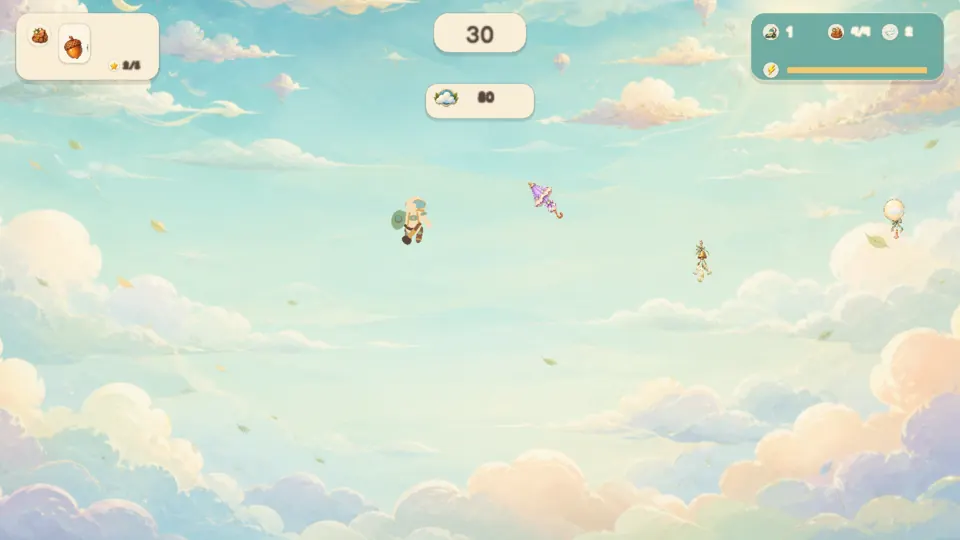

Aspirer et tirer
Là où BlastBlast! pompe et relâche un extincteur, Vacuum Shot ramasse un accessoire et le tire à force fixe, donc l'accessoire choisi détermine le tir.
Aspirez un accessoire. Tirez. Volez.
Tapez sur un accessoire pour l'aspirer dans le sac de l'aspirateur, tirez-le pour le recul, puis atterrissez en douceur pour garder votre chaîne de score. Le parcours du jardin ne se termine jamais.
Le projet Unity a un aspirateur, 39 accessoires, un parcours sans fin et un panneau d'amélioration, avec des tests automatisés. L'audio et les versions pour appareils restent à venir.
Tapez sur un accessoire de la prairie ou du ciel pour l'aspirer dans le sac. Le sac ne contient qu'un objet, et sa puissance indique l'effet d'un tir.
Tapez ailleurs pour tirer l'objet à force fixe. Le recul propulse le pilote vers l'avant et vers le haut, avec une seconde entre les tirs et deux corrections d'air par vol.
Un atterrissage stable recharge vos tirs d'air et votre score selon la note. Enchaîner les atterrissages contrôlés augmente le bonus.
Là où BlastBlast! pompe et relâche un extincteur, Vacuum Shot ramasse un accessoire et le tire à force fixe, donc l'accessoire choisi détermine le tir.
Les correcteurs d'air, équilibré, atterrissage doux, poussée avant et ascension verticale affichent chacun une puissance de 1/5 à 5/5. Dix d'entre eux flottent dans les airs jusqu'à être ramassés.
Un atterrissage demande environ un quart de seconde de contact stable. Il est noté Parfait, Sûr ou Brutal, et les atterrissages contrôlés consécutifs forment une chaîne pouvant aller jusqu'à huit.
Collines et vallées ondulantes sans obstacle bloquant forment le parcours, et le jardin s'estompe dans un ciel de haute altitude quand vous volez haut.
Deux branches d'amélioration, Moteur et Sac, montent jusqu'au niveau 4 et se paient avec Dew. La progression est sauvegardée séparément pour chaque aspirateur.
Les règles de lancement, d'atterrissage, de caméra et de progression ont des tests EditMode, et le comportement de la scène et de la physique a des tests PlayMode.
Il n'y a pas encore de date de sortie. Ce sont des objectifs pour le projet, pas des promesses.
Captures in-engine du projet Unity, plus une planche des accessoires à collectionner.



Un jeu d'arcade de vol à recul sans fin. Vous aspirez des accessoires, les tirez pour propulser votre pilote vers l'avant et atterrissez doucement pour construire une chaîne de score. Il repose sur la même base que celui du studio BlastBlast!, avec un jardin pastel, un aspirateur à la place d'un extincteur et des accessoires qui règlent la puissance de chaque tir.
C'est un vertical slice visant Android et iOS. Le profilage sur appareil, l'audio final et les versions signées restent à faire, et il n'existe pas encore de version publique, de fiche boutique ni de date de sortie.
Vacuum Shot est développé par WillowinWorlds, un studio indépendant de jeux mobiles (voir son jeux principaux). Suivez WillowinWorlds sur les réseaux sociaux liés sur cette page, ou par e-mail willowinworlds@gmail.com pour demander des nouvelles de Vacuum Shot.
Le vote ouvrira sur les canaux du studio. Suivez WillowinWorlds pour participer.